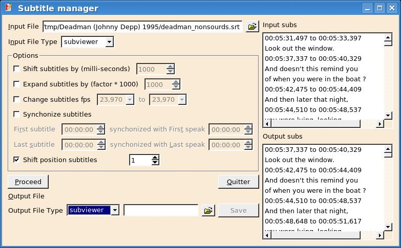

DVD Tools
dvdaudio Download
I created this tool when I had a bunch of mp3 files that would have taken 5 cds.I thought, well a DVD can store the whole thing, but how can I listen to the music afterward ?
I finally thought of creating a king of slide show where the "show" is only the music.
That way, I can listen those mp3 files on my standalone dvd player.
So how does it works.
Well it has a nice (hopefully) graphical interface written in Qt.
You create a new DVD, in which you add albums, in which you add tracks.
Here is what it looks like :

Most information is gathered from the mp3 file, thanks to the ID3 tags. However you can edit nearly each field.
When you have finished inserting albums and tracks, just click "Encode". When encoding is finished, the dvd structure is ready to be burn in the DVD directory of the temporary folder.
dvdaudio will produce menus with 8 albums titles at most and buttons to navigate the menus.
An album will be transformed into a dvd title, each track as a chapter, and on the screen information about the track is displayed.
Here's what a menu looks like :

Additionnal buttons "Next" and "Prev" are added if necessary.
And here is what a track looks like :

Fonts, background images and other king of things are customizable.
dvdaudio is written under linux, and is heavily dependent on softwares that are at best rare on windows.
Dependencies :
- Qt
- mplayer/mencoder
- lame
- toolame
- dvdauthor
- ImageMagick
- bash
- mjpegtools
The GUI in itself is as portable as a Qt project can be, so if you have all these tools available under windows, it may work...
Installation :
$ tar zxvf dvdaudio-<version>.tar.gz
$ cd dvdaudio-<version>
$ qmake dvdaudio.pro
$ make
$ make install
Notes :
- At the moment, only PAL dvds are supported.
- Global overhead is of about 20%. If you know how to reduce it, let me know.
- Don't forget to put an Arial.ttf file in your ~/.spumux directory if you want dvdaudio to work.
submgmt
Handling subtitles files may be frustrating. More often than not, the subtitle file is not really synchonized with the movie. Submgmt is my answer to this problem.Is has many neat features :
- shift subtitles
- expand subtitles
- change subtitle fps
- synchronize with a movie
- shift position subtitles
It knows the following formats :
- subviewer (.srt)
- microdvd
- subrip
- sami
- spumux
As a side effect, it can convert a subtitle file to any of the above format.
Here is a sscreenshot showing how a subtitle is shifted by one position :

Dependencies :
- Qt
Installation :
$ tar zxvf submgmt-<version>.tar.gz
$ cd submgmt-<version>
$ qmake submgmt.pro
$ make
$ make install